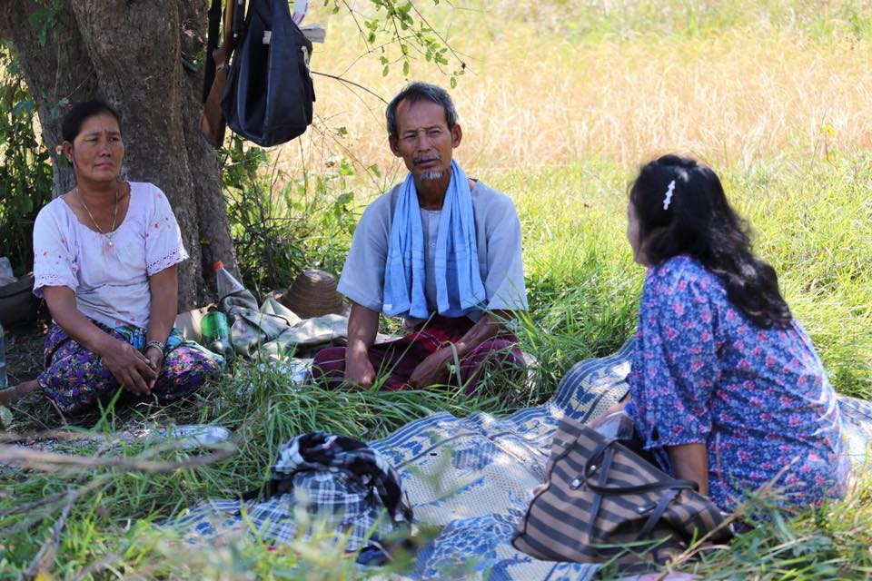
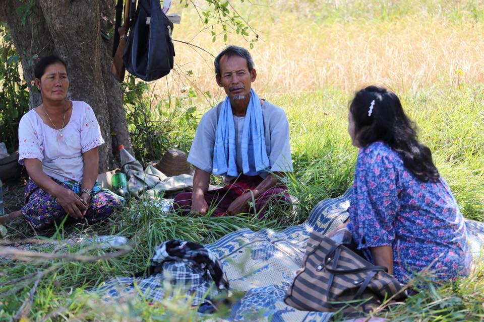
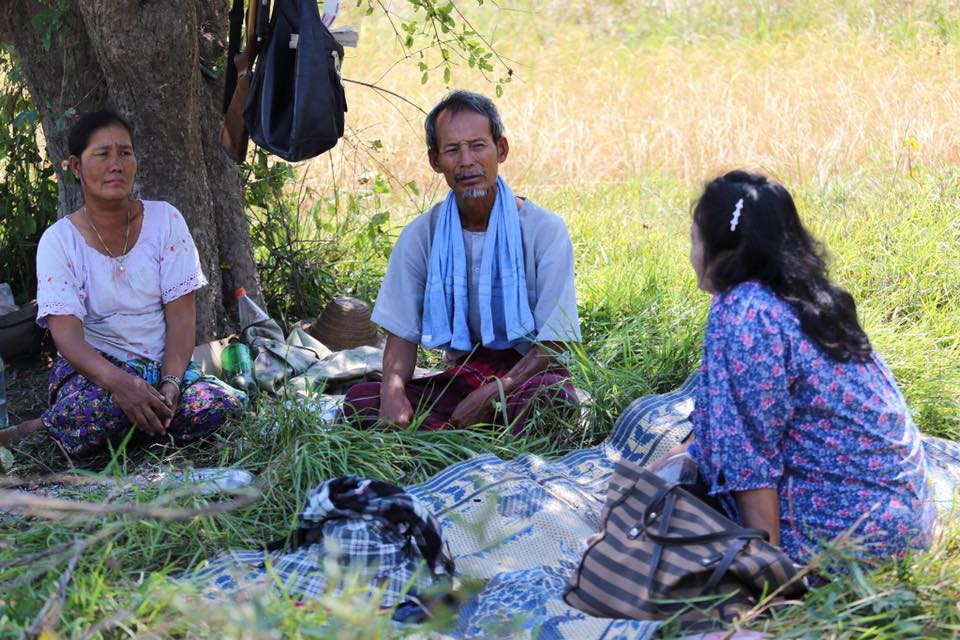
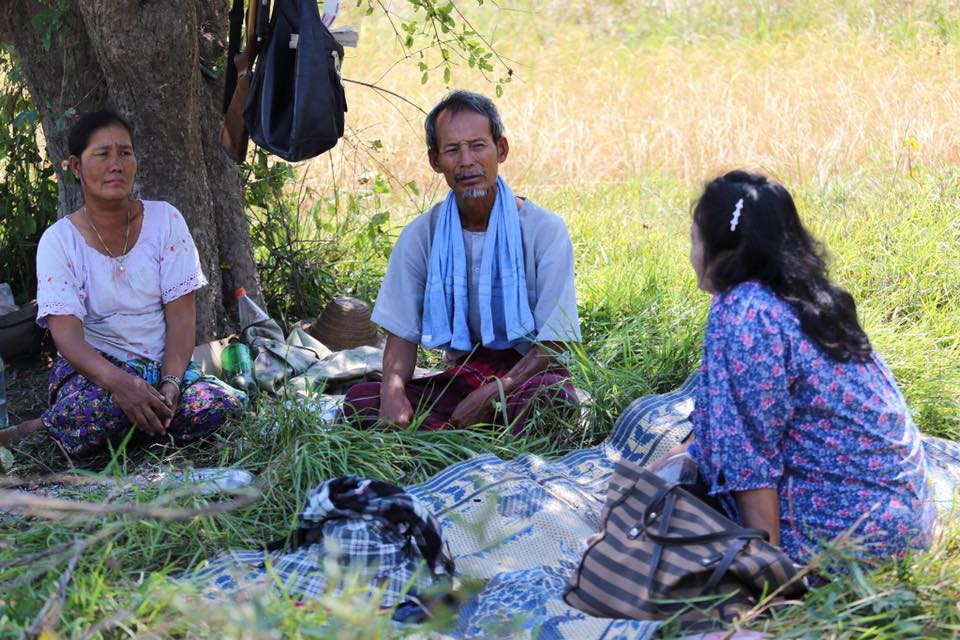

Rice producting for KNU/KNLA PC represents a significant portion of the livelihood of the people living in the area. Rice is the central to Karen people and can be represent as one of the main foods and source of nutritions.
 


